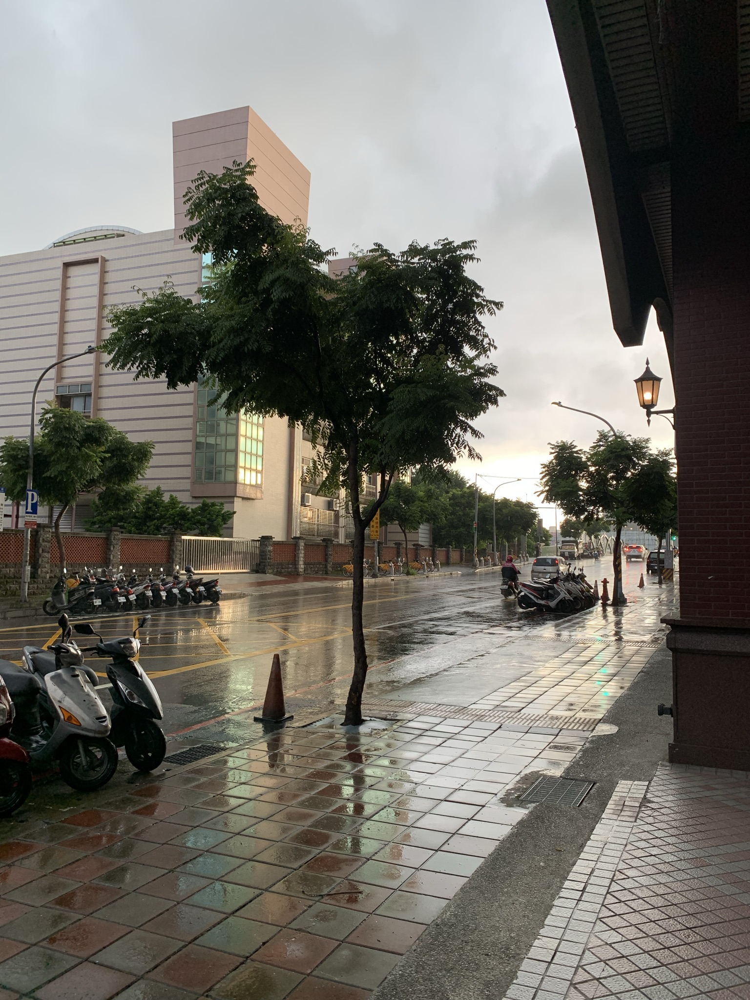
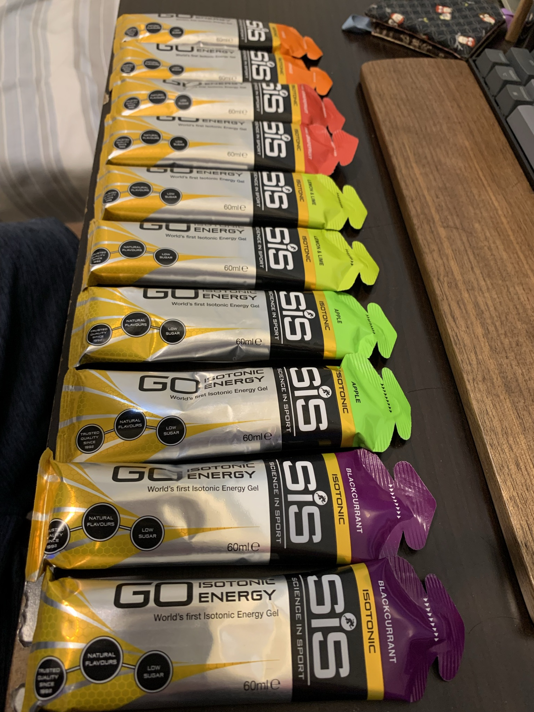
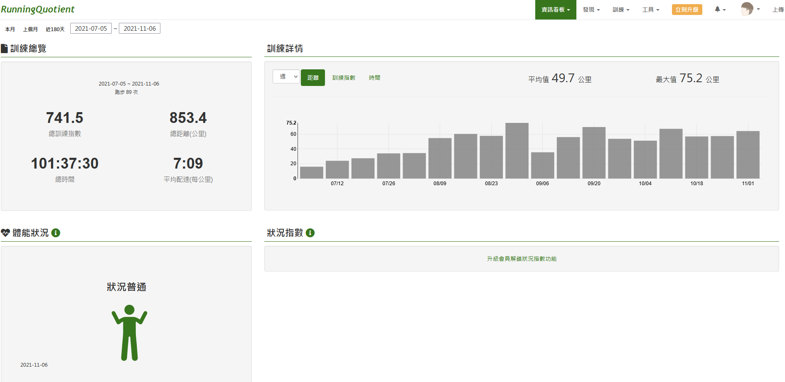
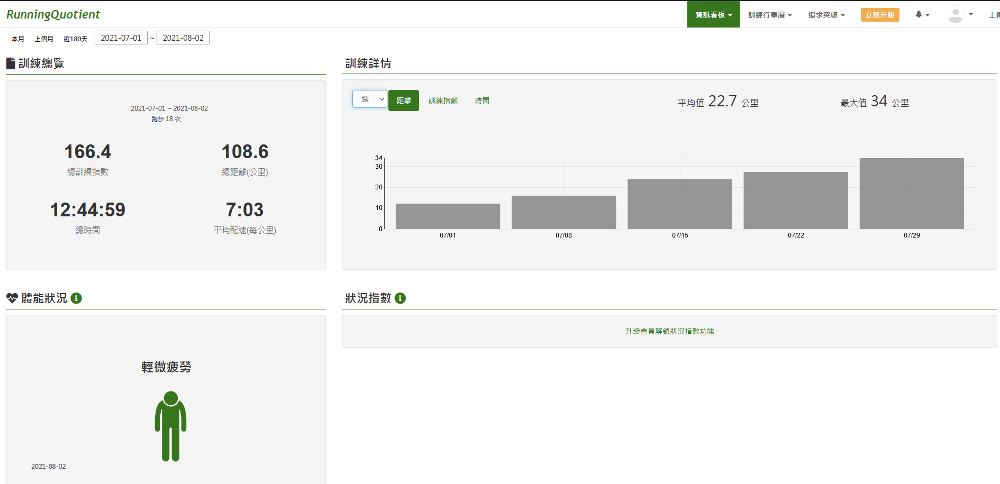
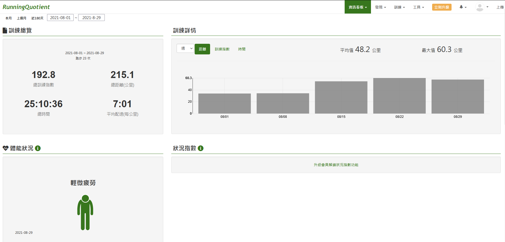
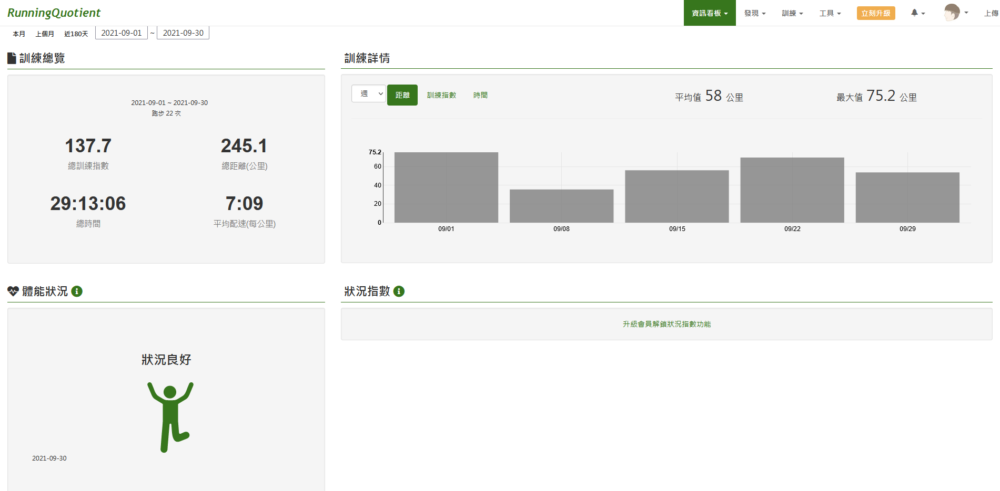
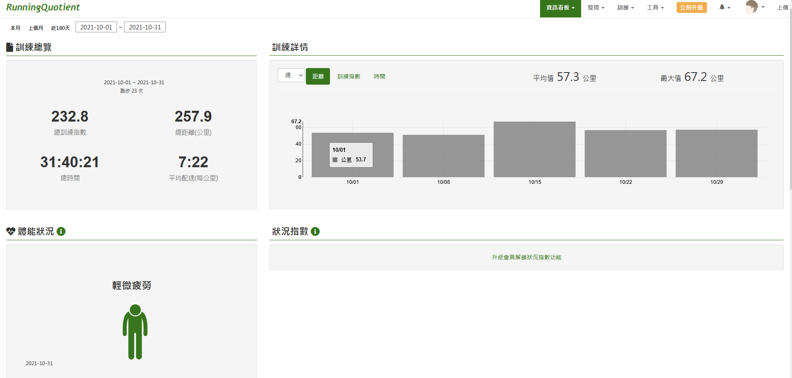
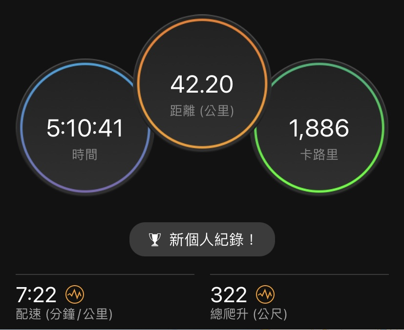

在還沒開始之前, 跑步這件事對我來說是屬於歡樂跑的性質, 就是平常下班後都會去跑步, 周跑大約兩天, 也參加過幾場半馬
近一至兩年工作與心態遇到低潮, 自我價值感和信心非常低, 內心存在一個念頭, 加上之前看了Jay的跑步筆記, 一直很想體驗看看透過週期化訓練後完成一場全程馬拉松會是甚麼樣的風景, 因此2021年度目標之一是週期化訓練與全馬, 想要的是證明可以完成一項無法一蹴可幾, 需要拆解並按照自己規劃的想法執行並調整的事情
從2021開始, 2-4月份大概是看書, 報名比賽, 選定課表, 訂出目標, 接著5月份調整跑姿, 7月份開始訓練到11月初完成
看書和真的報名比賽
剛開始對於如何完成一場全馬所需要的訓練方式和量大概是什麼情況, 懵懵懂懂, 只知道這件事情不能蒙混帶過, 因為下場可能會是造成自己受傷
因此複習<Jay的跑步筆記>和<跑者都該懂的跑步關鍵數據>, 同時買了<漢森馬拉松訓練>, 大約2月底, 在運動筆記的網站看了一下有哪些賽事, 最後完成比賽報名
選定課表和訂出目標
看完漢森馬拉松訓練, 課表的部分分成三種: 只求完賽, 新手和進階課表
在只求完賽, 新手課表煩惱了一陣子, 主要是因為距離和訓練組成元素不同, 擔心自己是否能夠完成, 最後選擇後者, 原因是想要體驗看看和嘗試, 失敗也沒有關係
根據2021遠東半馬和完賽時間對照表定出目標
看了一下之前遠東馬印出的成績證明, 大會成績為2:22:20, 個人成績為2:20:55
2:23:18 => 5:02:13
2:20:59 => 4:57:20
決定目標
- 享受過程, 5小時無傷完賽
- 找到訓練方法和系統並執行, 過程中知道如何調整, 最後不受傷跑完42.195 km
- 能夠體會全程用跑的感覺
根據完賽目標列出目標時間與配速關係, 因為書中都是使用英里(mile), 所以要先轉換成常用的公里
| 項目 | 英里mile | 公里km |
|---|---|---|
| 恢復跑 | 14:22 | 8:55 |
| 輕鬆有氧A | 13:32 | 8:24 |
| 輕鬆有氧B | 12:41 | 7:52 |
| 適度有氧/長跑 | 12:16 | 7:37 |
| 馬拉松配速/節奏跑 | 11:27 | 7:06 |
| 強化跑 | 11:17 | 7:00 |
| 10公里配速 | 10:30 | 6:31 |
| 5公里配速 | 10:04 | 6:15 |
跑姿調整
心想若使用的姿勢較容易受傷, 經過這麼長的距離的加乘可能會更慘, 因此第一步是希望看看是否有較不容易受傷的跑姿
透過搜尋Youtube, 發現了哲睿教練的影片, 學到了一些重要的基本觀念, 並且經由影片的說明知道這樣做的影響是什麼, 也知道可以透過馬克操幫助自己調整
抬大腿, 夾屁股, 身體向前傾
- 跑步最重要的基本功，正確跑步姿勢你會了嗎
- 跑姿調整｜腳跟還是腳掌落地？正確跑姿可以有效降低運動傷害，讓你跑的更健康更長遠 feat.哲睿
- 【哲睿Jerry】顏質最高的一集!!跑步除了揮臂重要，還要屁股… | 教名人跑步EP 2 @健美人生K教練
- 【哲睿Jerry】跑步關於上廁所要夾XX ? 什麼是跑步向前傾，屁股留在後面送髖 ? | 跑姿髖關節前傾 ft insta360【運動J計畫】
- 『運動J計畫』EP4 馬克操竟然就是馬克做的操？你會做馬克操嗎？
調整的過程中, 請朋友幫忙, 透過手機拍攝慢動作觀察, 後期發現疲倦時左腳會跑掉
5月
調整前
練習抬大腿, 夾屁股, 身體向前傾, 看起來有點刻意, 落地的位置從腳跟轉移至中間
8月
疲倦時左腳會跑掉
9月
開始訓練
在批踢踢Road_running 找到網友分享的漢森訓練課表, 並且加上了番茄鐘的資訊, 幫助自己了解大約會花費的時間
從7/5開始第1周，經過18周的練習, 前4周感覺很輕鬆, 第6周開始進入周跑6天的狀態, 剛開始覺得很新奇, 中後期就覺得很倦怠
每次練習的流程如下
- 馬克操A, C各一組, 往前走 x 50, 墊步 x 30, 連續向前 x 15, 大約10分鐘
- 主要訓練項目
- 靜態收操
中後期練習完因為時間因素, 7-11變成了晚餐好朋友XD, 此外也變得較晚睡
遇到的困難大概有三類, 第一類因為疫情的原因, 原本報名的比賽延期, 戴口罩呼吸困難, 打疫苗的當天和隔天無法訓練
第二類是環境的原因: 颱風和下雨
第三類是真正練習後才發現的問題: 鞋子被自己留的汗弄濕

補給準備
從書中得到幾個概念和理解補給的重要性: 脂肪與碳水提供成功完賽的能量，蛋白質則協助你跑步後的復原, 脫水會對跑者體能帶來負面影響
因為疫情因素決定還是要做個收尾, 自己完成全馬距離, 所以倒數第二周至迪卡農購買水壺背帶和軟水壺, 倒數一週使用水壺背帶發現買太大, 背帶和身體之間有空隙造成跑步時裝滿的水袋會劇烈晃動, 不適感強烈QQ, 因為已經下過水, 最後先用皮帶在上胸做固定
同時在蝦皮上購買sis能量膠, 一條87卡, 跑前一周吃的飯量比平時還多且喝的水也較多
執行方式: 前期多補水加上一小時一條能量膠

紀錄
18周週期化訓練

月里程數




42k紀錄

完成後紀錄與檢視不足
心態
剛開始有點自以為，後來得到情侶的幫忙指路，比較緩和
補水
自己太慢補水，嘴唇感覺乾，表示已經為缺水狀態
水量準備不足：最後使用 500 ml * 2（水袋）和580 ml另外買，580ml運動飲料
配速太快
前段太快，大約6:40，到38-40km爆掉
補給
中後期主要依靠女友的補給車才得以完成這次挑戰
忘記準備鹽錠
吃了4條能量膠，橘子，檸檬，葡萄柚，蘋果味道都不錯，黑加侖味道自己有點無法接受
體驗的開心與痛苦時刻
開心
- 看到跑錶顯示訓練完成的時候
- 跑完吃東西覺得特別好吃
痛苦
- 想到禮拜日要跑的長距離
- 跑完後手洗衣服
- 周跑6天的倦怠感
體驗
- 需要付出相對應的代價
- 為自己下決定, 決定之後承擔這個決定所要付出的代價
- 花費時間算多, 周跑6天, 後期至少3個番茄鐘以上
- 休息是必要的, 例如: 每周三
- 覺得自己不行的時候, 練習後下次再試, 或許就行得通, 例如: Week 6, 9.6km爆掉, Week 7, 12km爆掉, Week 9, 17km爆掉
- 懷疑，倦怠，想要放棄都有出現過，比較長的距離跑不完時，懷疑自己是否真的可以完成
- 執行前一天是興奮較多，且不會心虛的